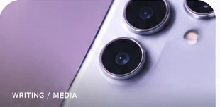
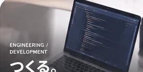

ハチおじとは？
経験を、掛け合わせる。
人と向き合うこと。わかりやすく伝えること。アイデアを形にすること。
理学療法士、ライター・ブロガー、ITエンジニア。それぞれの経験を土台に、関心のある分野へ活動を広げています。
人と向き合った、
約10年間。
理学療法士として約10年間勤務。臨床の現場で身体と向き合い、新人教育にも携わってきました。
臨床での経験
一人ひとりの身体の状態に向き合う臨床経験が、ヘルスケアへの関心と、これからのボディケアへの挑戦につながっています。
新人教育での経験
新人教育を通して培った「相手に伝える」経験は、現在の情報発信にもつながる土台です。
使って、考えて、伝える。

ライター・ブロガー歴5年。iPhoneやApple製品、ガジェットのレビュー・比較・活用術を発信しています。
Apple歴は2007年9月5日から。Apple歴 19年の経験を、読者の疑問に答える記事づくりに活かしています。
noteで2年連続達成
アイデアを、形に。

ITインフラの経験を土台に、Webサイトやアプリなどの制作に取り組んでいます。
学びながらつくり、できることを増やしていく。開発作品は、公開できるものから順次ポートフォリオに追加していきます。
制作・実績を見る ↗
次の挑戦は、
「整える。」
理学療法士としての経験を土台に、整体師としての活動を開始予定です。
情報発信、制作、そしてボディケアへ。これまでの経験を掛け合わせながら、新しい活動にも挑戦していきます。
一緒に、
面白いことを。
メッセージはXのDMへお願いします。
← トップページへ戻る